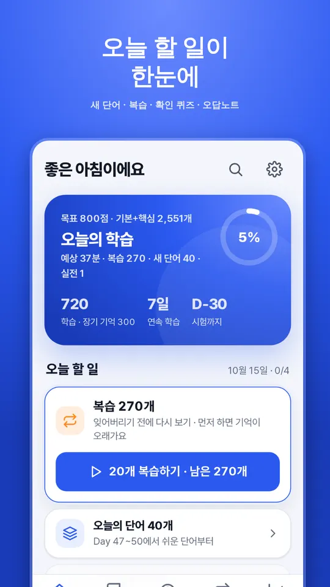
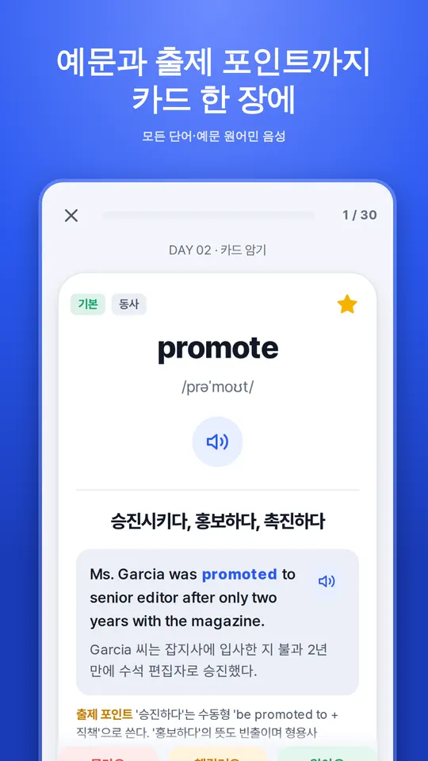
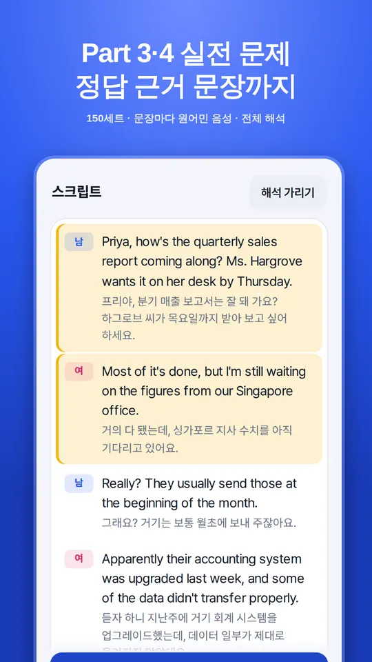
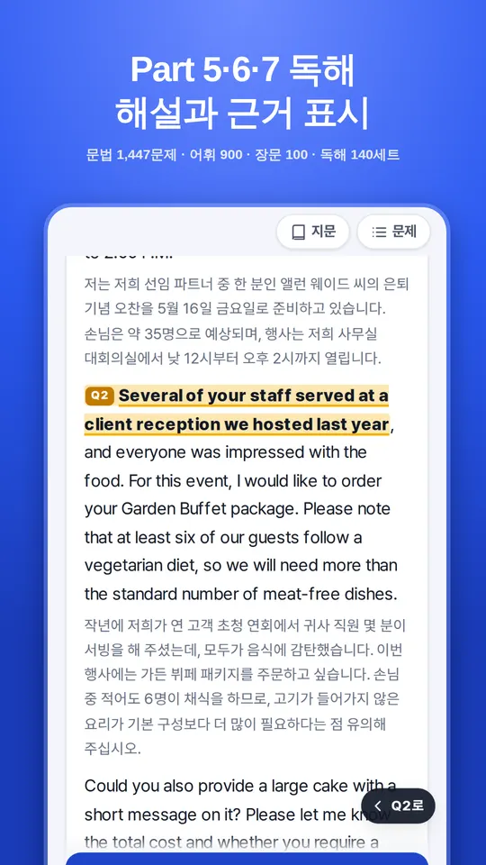

Features
주요 기능
01
목표 점수 맞춤 단어
토익 단어 3,600개 · 원어민 음성 · 잊을 때쯤 다시 나오는 간격 반복 복습.
02
Part 1~7 실전 문제
사진 묘사부터 독해까지 실제 형식 그대로, 정답 근거를 짚어 주는 해설.
03
진단 · 모의고사
약 12분 실력 진단, 하프·정규 모의고사와 예상 점수, 약점 분석.
04
7개 언어
한국어·영어·일본어·베트남어·중국어(번체)·스페인어·프랑스어.
Guide
이용 안내
- 무료로 설치해 일부 학습을 체험하고, 전체 이용권(한 번 구매, 구독 아님)으로 모든 콘텐츠를 이용할 수 있습니다.
- 결제와 환불은 Google Play 결제 시스템과 환불 정책을 따릅니다.
- 회원가입이 없고, 학습 기록은 기기에만 저장됩니다. 광고가 없습니다.
TOEIC is a registered trademark of ETS. This app is not endorsed or approved by ETS.